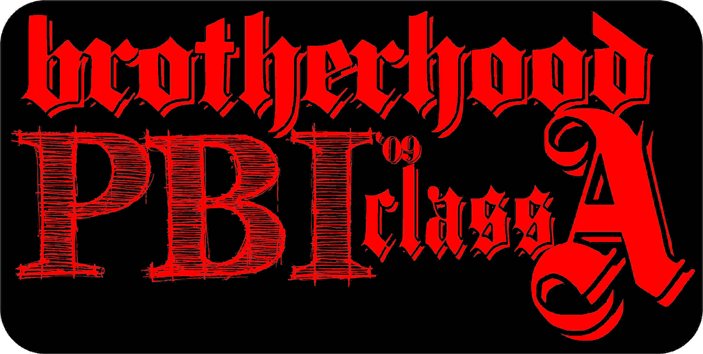
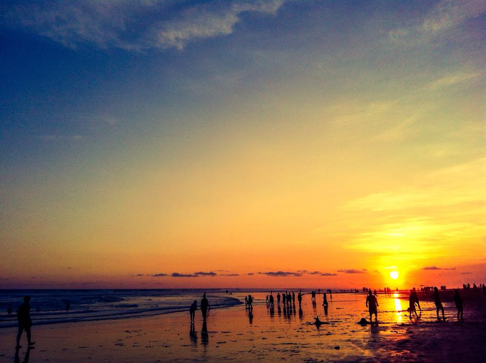
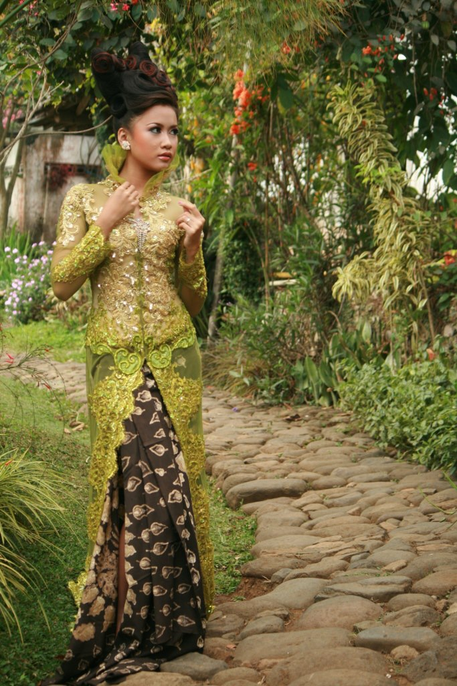
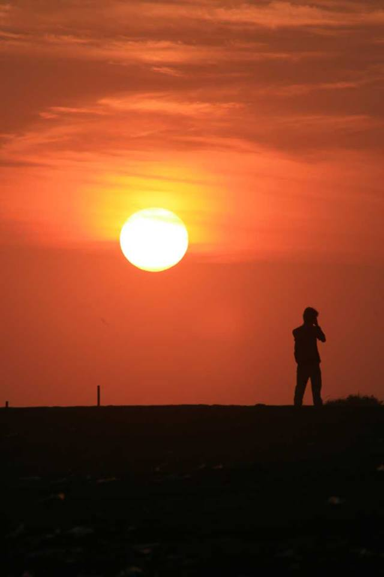

"Dan telah Kami jadikan di Bumi ini gunung-gunung yang kokoh
supaya Bumi itu (tidak) guncang bersama mereka dan telah
Kami jadikan (pula) di Bumi itu jalan-jalan yang luas agar mereka mendapat petunjuk" (QS.
Al-Anbiya' ayat 31)
Berkreasi Menggunakan Corel Draw
Membuat Stiker Kelas

Kreasi Kedua
Membuat Poster Peringatan Belasungkawa
Eksplorasi Kamera
Parangtritis di Awal Tahun

Beautiful in Glamour

Sunset Hunter

Contoh Artikel SEO yang Menempati Halaman Pertama Google
Hasil Penulisan dengan Keyphrase SEO Friendly ON-Page dan OFF-Page